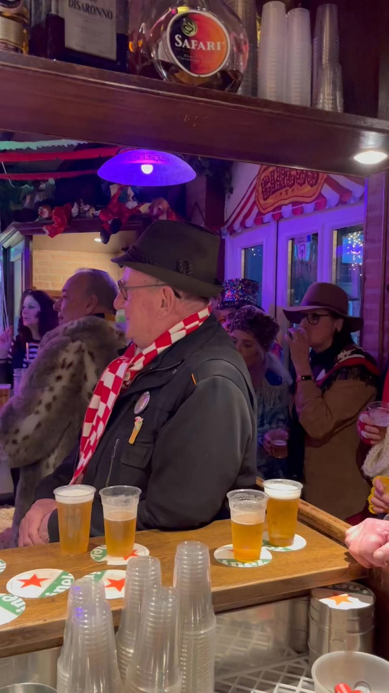
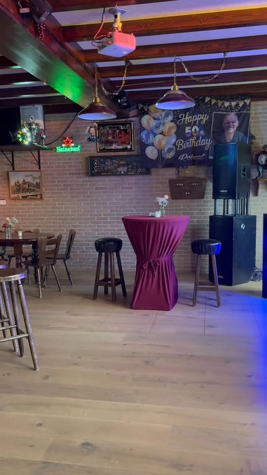
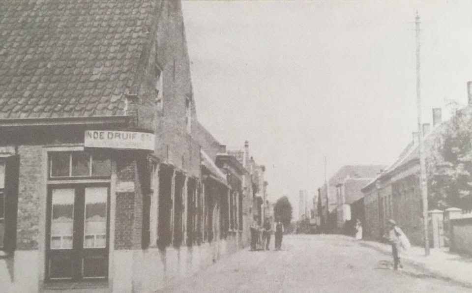
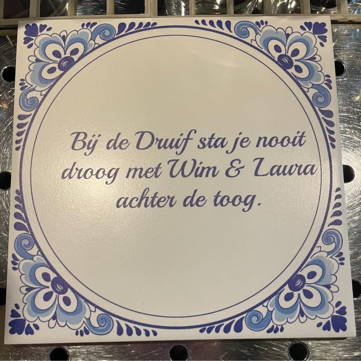
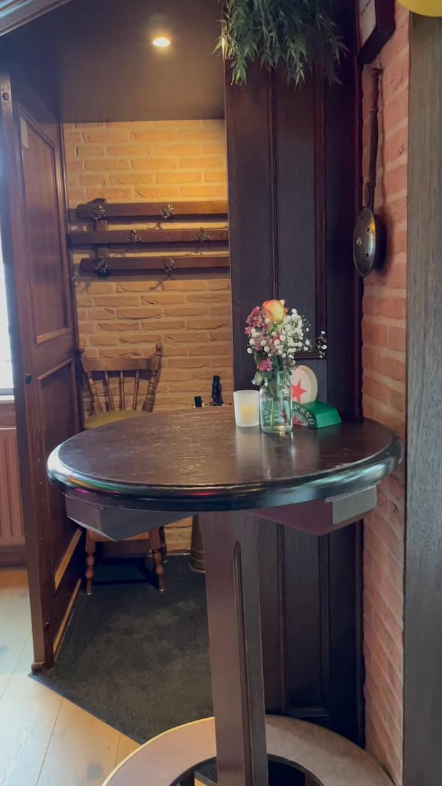
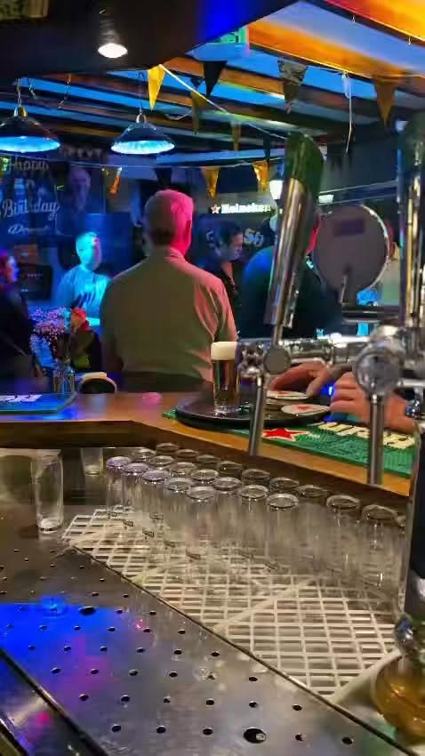
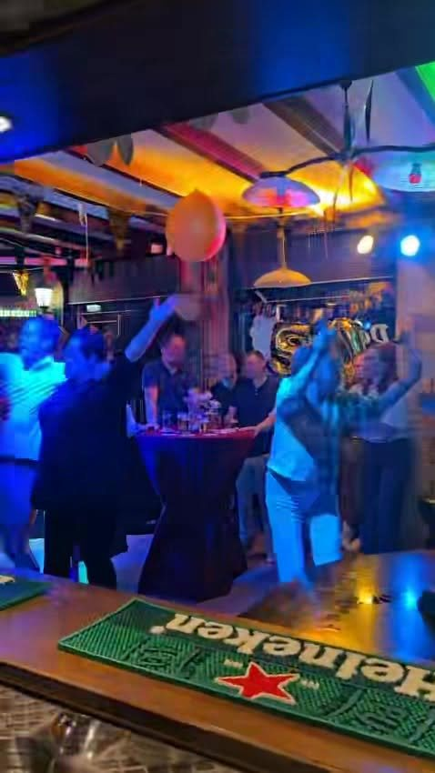

Bij de Druif sta je nooit droog
Bruin café aan de Langenoordstraat in Zevenbergen, al sinds 1893. Met Wim & Laura achter de toog, een goed glas aan de bar en regelmatig een feestavond.
Altijd wat te beleven
Gewoon een biertje aan de bar kan altijd. Maar bij de Druif wordt ook graag feest gevierd.
Kermis
Op kermiszondag draait de Druif door, met orgelmuziek in het café.
Kermiszondag vanaf 16.00 uurKoningsnacht
Feestavond met Rik Nijman en DJ Paul. Kaarten in de voorverkoop.
Kaarten à € 5Carnaval en tonpraten
Verkleed aan de bar en tonpraters op de ton, met giften voor stichting Geluk op Wielen.
Elk jaar weer gezelligLive muziek
Zoals met De Notenkrakers en Marco de zingende barkeeper. "Wat een gezelligheid!"
Kijk in de agendaDe agenda en eventuele sluitingsdagen staan altijd op onze Facebookpagina.

Uw feest vieren bij de Druif
Verjaardag, jubileum of een avond met de vereniging? Bij de Druif kunt u een besloten feest geven. Het café is die avond dan helemaal voor u en uw gasten.
Bel of app Wim & Laura, dan bespreken we samen de datum, het aantal gasten en uw wensen.
- Het café voor u alleen
- Statafels en aankleding
- Geluid en licht in huis
- Wim & Laura achter de bar
Een datum vastleggen?
Bel, app of vul het formulier in. Wim & Laura denken graag met u mee.


Een café met geschiedenis
"Bij de Druif sta je nooit droog met Wim & Laura achter de toog."Ons eigen tegeltje
Café de Druif bestaat al sinds 1893. Nu staan Wim & Laura achter de toog. Een echt bruin café: een biertje aan de bar, een goed gesprek, en als er iets te vieren valt een avond vol muziek.
Een kijkje binnen



Feest aanvragen
Laat weten wat u wilt vieren en wanneer. Wim & Laura nemen zo snel mogelijk contact met u op.
Café de Druif
Liever even bellen? Of loop gewoon binnen.